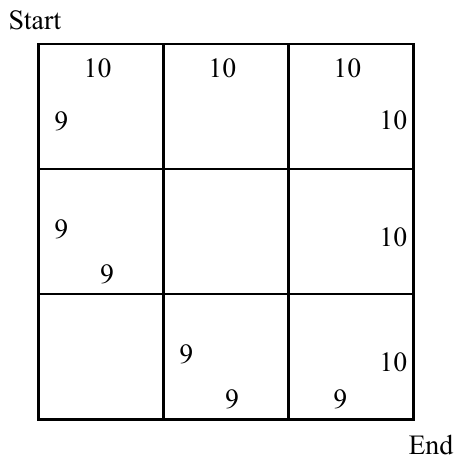

ICPC World Finals 2008 · Problem K
Johnny drives a steam roller, which like all steam rollers is slow and takes a relatively long time to start moving, change direction, and brake to a full stop. Johnny has just finished his day’s work and is driving his steam roller home to see his wife. Your task is to find the fastest path for him and his steam roller.
The city where Johnny lives has a regular structure (the streets form an orthogonal system). The city streets are laid out on a rectangular grid of intersections. Each intersection is connected to its neighbors (up to four of them) by a street. Each street is exactly one block long. When Johnny enters a street, he must always travel to the other end (continue to the next intersection). From that point, he can continue in any of the four possible directions to another intersection, and so on.
By studying the road conditions of the streets, Johnny has calculated the time needed to go from one end to the other of every street in town. The time is the same for both directions. However, Johnny’s calculations hold only under the ideal condition that the steam roller is already in motion when it enters a street and does not need to accelerate or brake. Whenever the steam roller changes direction at a intersection directly before or after a street, the estimated ideal time for that street must be doubled. The same holds if the roller begins moving from a full stop (for example at the beginning of Johnny’s trip) or comes to a full stop (for example at the end of his trip).
The following picture shows an example. The numbers show the “ideal” times needed to drive through the corresponding streets. Streets with missing numbers are unusable for steam rollers. Johnny wants to go from the top-left corner to the bottom-right one.

The path consisting of streets labeled with 9’s seems to be faster at the first sight. However, due to the braking and accelerating restrictions, it takes double the estimated time for every street on the path, making the total time 108. The path along the streets labeled with 10’s is faster because Johnny can drive two of the streets at the full speed, giving a total time of 100.
The input consists of several test cases. Each test case starts with six positive integer numbers: R, C, r1, c1, r2, and c2. R and C describe the size of the city, r1, c1 are the starting coordinates, and r2, c2 are the coordinates of Johnny’s home. The starting coordinates are different from the coordinates of Johnny’s home. The numbers satisfy the following condition: 1 ≤ r1, r2 ≤ R ≤ 100, 1 ≤ c1, c2 ≤ C ≤ 100.
After the six numbers, there are C-1 non-negative integers describing the time needed to drive on streets between intersections (1,1) and (1,2), (1,2) and (1,3), (1,3) and (1,4), and so on. Then there are C non-negative integers describing the time need to drive on streets between intersections (1,1) and (2,1), (1,2) and (2,2), and so on. After that, another C – 1 non-negative integers describe the next row of streets across the width of the city. The input continues in this way to describe all streets in the city. Each integer specifies the time needed to drive through the corresponding street (not higher than 10000), provided the steam roller proceeds straight through without starting, stopping, or turning at either end of the street. If any combination of one or more of these events occurs, the time is multiplied by two. Any of these integers may be zero, in which case the corresponding street cannot be used at all.
The last test case is followed by six zeroes.
All numbers are separated with at least one whitespace character (space, tab, or newline), but any amount of additional whitespace (including empty lines) may be present to improve readability.
For each test case, print the case number (beginning with 1) followed by the minimal time needed to go from intersection x1, y1 to x2, y2. If the trip cannot be accomplished (due to unusable streets), print the word Impossible instead.
4 4 1 1 4 4 10 10 10 9 0 0 10 0 0 0 9 0 0 10 9 0 0 0 9 0 10 0 9 9 2 2 1 1 2 2 0 1 1 0 0 0 0 0 0 0
Case 1: 100 Case 2: Impossible